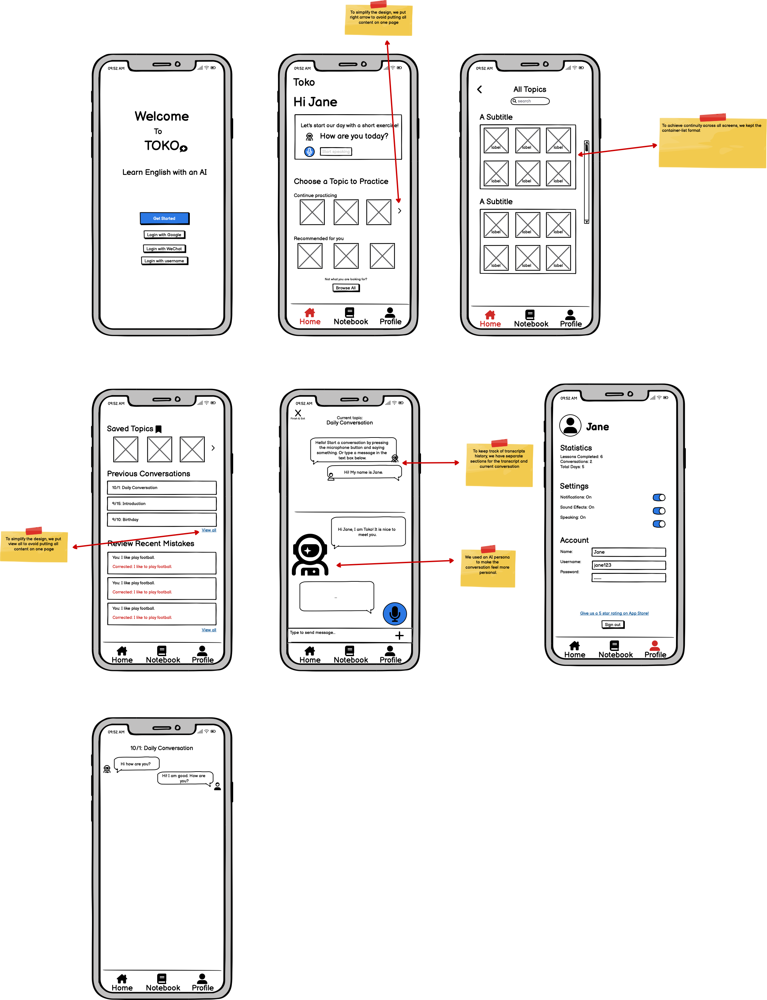

Toko App Design
Overview

In a group of four, we designed an interactive interface for an emerging startup. We went through a full process from creating sketches and mock-ups to user testing with a revised hi-fi prototype.
Pre-Design Thinking
The startup company that we chose is Toko. Toko is a mobile app that helps users learn English and gain fluency by having realistic conversations with an AI bot. The conversations are suggestions by choosing through a list of different topics, and the AI bot gives instant grammatical corrections and feedback. The startup’s target audience is mainly learners in East Asia. The users who our interface would impact would be non-native English speakers. Due to the fact that the app is a language learning app, it has a very specific target user audience.
Sketches
We each did some sketches for some important screens.

Low-Fidelity Wireframe With Annotations
The design decisions are in the annotation. Link to view it in Figma
Mockup Critics & Final High-Fidelity Wireframe
Critics Summary
- Text across the app was too small. Specifically, “view all” buttons, “browse all”, topic names, and sign up instructions, which we made bigger.
- The login screen flows were confusing. We streamlined this into one sign up page and one login page.
- We had inconsistent use of bookmark icons for saved topics. We added bookmark icons to every topic to allow users to save topics.
- We had inconsistent titles for the “Continue Practicing” sections on the home and notebook pages. We made these sections’ titles the same to make it clear these were the same section.
- We used red text for mistake corrections, which was seen as too aggressive. We changed this to blue.
- Our prototype did not show that corrections were made in real time on the chat screen. We added grammatical corrections and a pop-up explanation.
- To better use the touch interface, we added a swipe up functionality to continue the conversation on the transcript screen.
- The profile page had no way to edit account details, so we added edit buttons.
Final High-Fidelity Prototype
 Link to play with the prototype in Figma
Link to play with the prototype in Figma
User Testing
Scenario
This is a prototype of a language app that teaches non-native English speakers English by having realistic chats with an AI bot about different topics.
Imagine you are trying to learn English in this app. Navigate through the app and learn about different topics and interact with the app by completing the given tasks!
NOTE: This is not an actual website but an interactive mockup made on prototyping software; so you can click through but not actually type into the chat boxes or other complex features; also not all prototype components are completed (so only specific topics are 'clickable'). This is a mobile app so imagine that your cursor is your finger (click = tap, click and drag = swipe up or down, scroll = scroll).
Tasks
- Imagine you are trying to learn English in this app. Navigate through the app and try to chat about the topic “Social Gathering” (note: this is a prototype so you can’t actually interact with the AI bot or type into the chat box just navigate to the chat screen)
- After Task 1, imagine that you’ve previously already learned about the topic: “Snack Time.” Try to go back to that previously learned topic and continue the conversation about “Snack Time.” Then in your current conversation in “Snack Time,” try to learn the details of the grammatical mistake that you made in the chat.
- After Task 2, look back through your conversation so far; see if you can go back to the transcript.
- Go back to the home screen and navigate to view all the possible topics
- Navigate through the app and try to sign out or log out.
Post Test Questionnaire
- Was there anything confusing when using the app? Why or why not?
- Is there anything that you would like to improve about the app?
- What did you like the most about using this app? What did you like the least?
- On a scale from 1-5 from least likely to most likely, how likely would you recommend this app to a friend?
User Testing Videos
Click on the picture to watch our user testing videos

Result Analysis
Result Summary For Each Task
Task 1: Chat with the bot under the "Social Gathering" setting
- All three users were able to successfully find the “Social Gathering” topic and enter into the chat.
- One user suggested making the topic titles easier to be spotted either by making it a darker color or bolding it since the text was not super obvious. The other two users said that it was easy to find.
Task 2: Continue the chat under the "Snack Time" setting
- All three users struggled with figuring out how to continue the conversation.
- The drag up functionality was not intuitive, and they all attempted to click the section and saw no response and did not try dragging. Only one user was able to figure it out and found the grammar correction pop up immediately.
- Possibly the drap up interaction on a phone would be more intuitive than simulating phone interactions on a computer. Regardless, this would be more intuitive with a button.
Task 3: Go back to transcript and view history under the "Snack Time" setting
- Since some users were unable to navigate to the continued conversation page, they did not understand where the transcript was.
- One user that did find the page, thought that the arrow signs were confusing in that they were not exactly pointing to the transcript, leading her to misidentify which page was the transcript.
Task 4: Go back to home screen and navigate all possible topics
- All three users were able to navigate back to the home screen by finding it on the bottom navigation menu bar. Some users noted that the “Browse All” button was obvious and easy to find. All users found this task to be very easy.
- A user noted that they liked the blue color scheme for all the topics and seemed very calming.
Task 5: Sign Out
- All the users were able to find the sign out button and found the task extremely easy.
- The sign out button being under the profile page was expected and intuitive to all the users.
Potential Interface Changes
Based on the user testing result, we found some interface problems with our current prototype.
- One of the main comments that we received from user testing was that for Task 2, it was not very intuitive on how to continue a previously done conversation. We would potentially change our interface from swipe up to continue to a solid button so that the directionality of the arrow symbol does not confuse the user on which screen is supposed to be the "Transcript screen" and which screen is supposed to be the "Continue conversation screen".
- The other main issue was that users found it confusing that during a continued conversation, they could see the transcript while learning and as a static page. Users were not sure why there were two screens for the transcript. We would potentially change our interface to only show the static transcript page when viewing a previous conversation, and then if a user wanted to continue the conversation we would not have the option to open up the static transcript from the messaging page.
Impact
After finishing our design, we contact the founders of Toko and present them our work. The founder appreciated our work. They are going to implement the "short exercise" feature in our design soon!
← All Projects